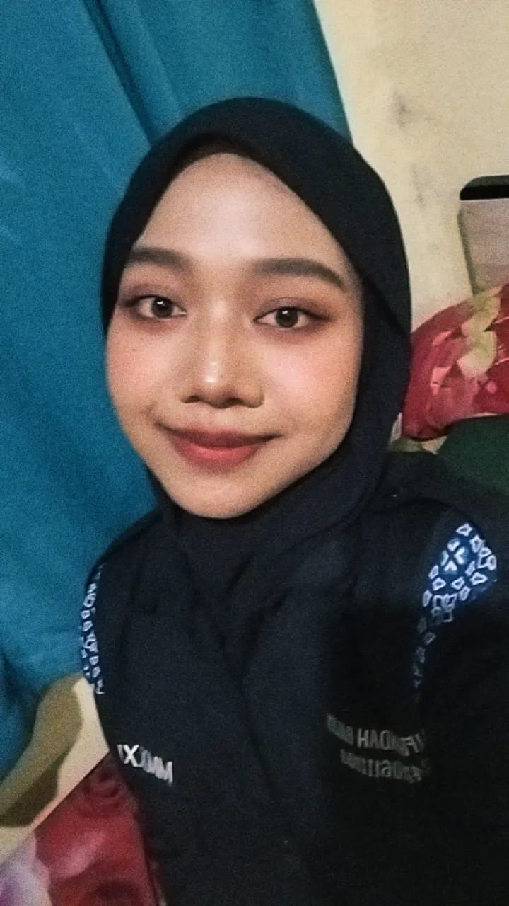

Informatics Student at Universitas Siliwangi ✦ Exploring Web Development & Creative Technology

Saya adalah mahasiswa Informatika Universitas Siliwangi yang memiliki ketertarikan besar pada bidang Cyber Security, Jaringan Komputer, serta pengembangan sistem berbasis web.
Saya tertarik memahami bagaimana sebuah sistem bekerja secara menyeluruh — mulai dari struktur jaringan, keamanan data, hingga perancangan antarmuka yang ramah pengguna.
Bagi saya, dunia informatika bukan hanya tentang coding, tetapi tentang bagaimana membangun sistem yang aman, efisien, dan bermanfaat bagi banyak orang.
Beberapa skill yang sedang saya pelajari dan saya kembangkan:
Mengembangkan website portofolio menggunakan HTML, CSS, dan JavaScript sebagai implementasi konsep client-side scripting. Fokus pada struktur, styling, dan interaktivitas sederhana.
Membuat halaman landing page dengan desain responsif menggunakan CSS Flexbox. Proyek ini menekankan pada layouting dan tampilan yang adaptif di berbagai ukuran layar.
Implementasi mata kuliah Organisasi & Arsitektur Komputer serta Interaksi Manusia & Komputer berupa pengembangan website informasi bekerja sama dengan Puskesmas Sangkali.
Pengembangan website simulasi untuk mata kuliah Sistem Operasi yang memvisualisasikan algoritma penjadwalan proses dan mekanisme deteksi deadlock secara interaktif.
Perancangan kerangka dan gambaran sistem website untuk sistem peminjaman ruangan di Informatika Universitas Siliwangi sebagai studi analisis kebutuhan sistem.
Mengembangkan website pembelajaran interaktif untuk mata kuliah Kalkulus I sebagai media visualisasi konsep limit, turunan, dan integral dasar agar lebih mudah dipahami.
Pembuatan website pembelajaran untuk Kalkulus II yang membahas integral lanjutan dan penerapannya dengan pendekatan visual dan terstruktur.
Mengimplementasikan struktur data List Linier (Linked List) menggunakan bahasa C. Proyek ini melatih pemahaman tentang pointer, alokasi memori, dan manajemen struktur data dinamis.
Mendesain database menggunakan ERD dan mengimplementasikannya dalam MySQL untuk studi kasus sistem manajemen data mahasiswa. Fokus pada normalisasi dan relasi antar tabel.
Tertarik untuk berdiskusi atau berkolaborasi? Yuk terhubung dengan saya ✨